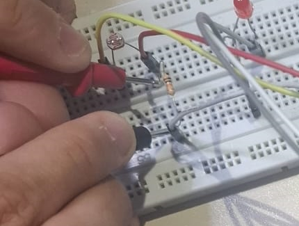
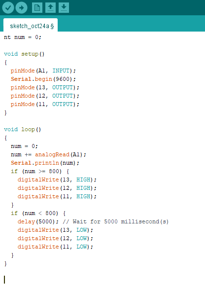
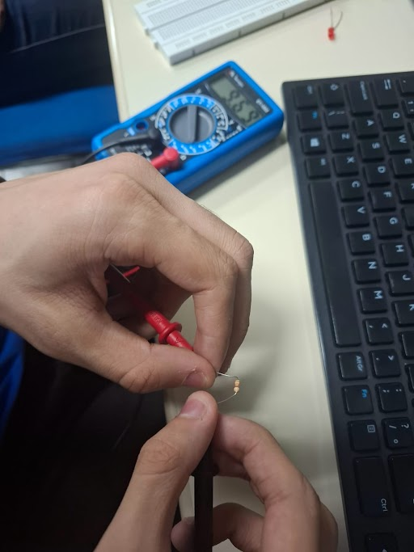
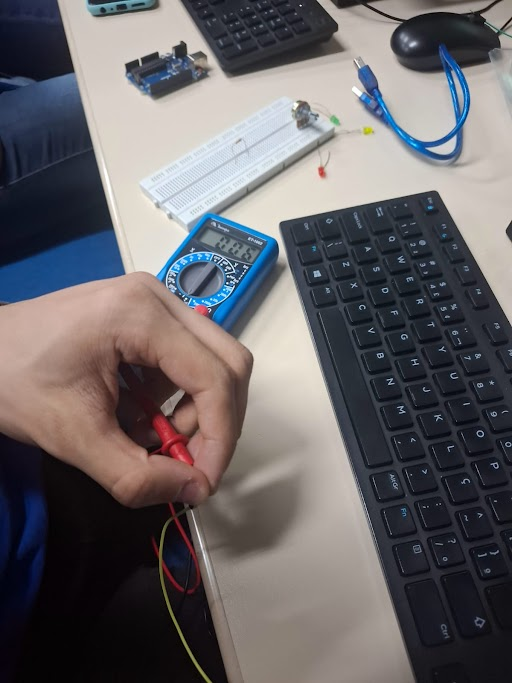
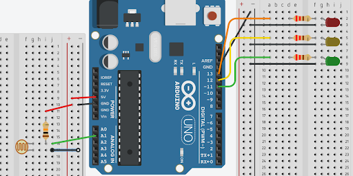

o que é LDR
iluminação
curiosidades
controle de Iluminação
LDR com a montágem física no ARDUÍNO

exemplo de código C++ no IDE ARDUÌNO

Filmagem do controle de iluminação
foto das medidas realizadas com o multímetro

O teste com resistor serve para ver o quanto de tensão ele resiste.

o teste com o fio é para conferir se ele esta fincionando, assim ele apitará.
ligação do LDR e LEDs no Tinkercad
